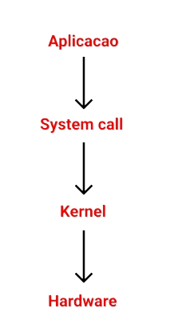

Elementos de um Sistema Operacional
Kernel
O kernel é o núcleo do seu sietma operacional, ele é responsável por fazer o elo entre o software e o hardware da sua máquina.
Funções do kernel
Algumas funções do kernel são: Tratamento de interrupcões e exceções, criação de processos e threads, gerenciar dispositivos de E/S, gerenciar a memória, entre outras funções.
System Call
As system calls (chamadas de sistema) são funções que invocam o sistema operacional para que ele faça alguma tarefa, quando ativado ele verifica se o usuário possui privilégios de administrador do sistema para retornar o pedido da aplicação que fez essa chamada
